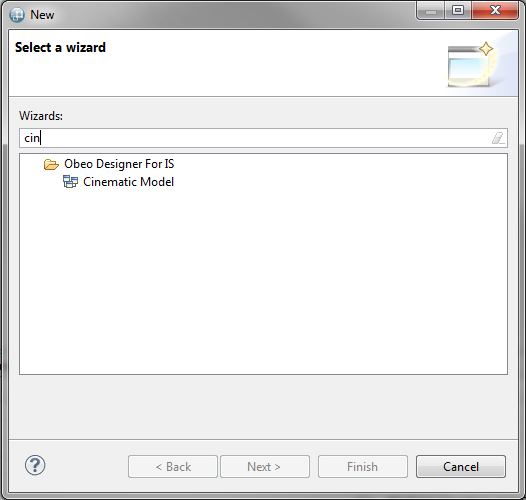
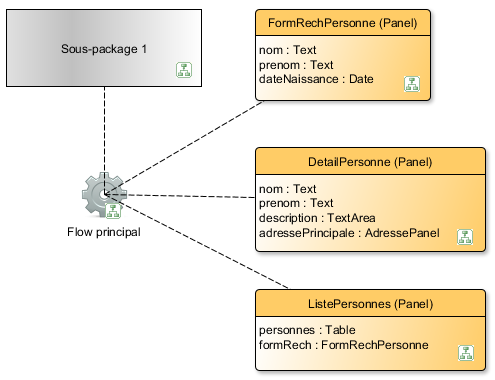
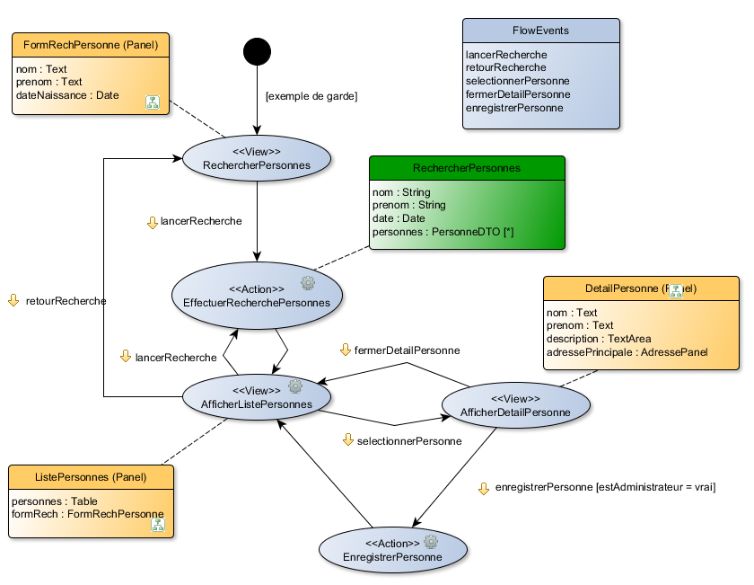
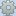
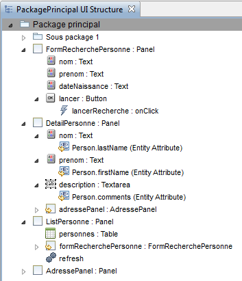
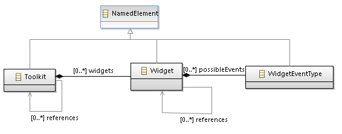

© Obeo 2012 - All rights reserved. This program and the accompanying materials are made available under the terms of the Eclipse Public License v1.0
Authors Stéphane Thibaudeau
Contact stephane.thibaudeau@obeo.fr
Obeo Network – Outillage Cinematic
Création d’un modèle Cinematic
La création d’un modèle Cinematic se fait en utilisant le wizard dédié.
Le wizard est invoqué via le menu File > New > Other... ou le raccourci clavier Ctrl+N, puis en choisissant l’entrée Cinematic Model (Catégorie Obeo Designer For IS).

Il suffit ensuite choisir le nom et l’emplacement du fichier et de valider.
Activation du point de vue
Utilisation d’un modeling project
Si le fichier a été créé dans un modeling project, il reste juste à activer le point de vue Cinematic Views. Pour l’activer choisir Viewpoints Selection dans le menu contextuel du modeling project.
Utilisation d’un autre type de projet
Pour les autres types de projet, il faut créer un representations file (fichier .aird) ou en utiliser un existant puis ajouter le modèle Cinematic comme ressource sémantique à ce representations file.
Pour créer un nouveau representations file, cliquer sur File > New > Other.. ouis choisir Representations file. Le wizard propose d’initialiser le fichier à partir d’un modèle existant qui peut être le modèle Cinematic créé précédemment.
Pour ajouter le modèle Cinematic à un representations file existant, choisir Add Model dans le menu contextuel du fichier .aird, puis sélectionner le modèle Cinematic créé.
Activer un point de vue se fait alors en choisissant Viewpoints Selection dans le menu contextuel du fichier .aird.
Fonctionnalités du modeleur
Le modeleur Cinematic V2 propose les représentations suivantes :
- Package Diagram : diagramme permettant de visualiser les Packages, Flows et ViewContainers.
- UI Structure : représentation aborescente permettant de visualiser et modifier la description statique de l’IHM (écrans, panels, widgets, ...).
- Flow Diagram : diagramme permettant de visualiser et modifier un Flow, i.e la description dynamique de l’IHM.
Les maquettes proposées dans ce document ont pour objectif de présenter l’agencement des différents éléments, les détails de représentations graphiques seront certainement différents.
Pour toutes les représentations proposées des vues Properties générées avec EEF seront mises en place.
Package Diagram
Contenu
Ce diagramme est défini sur un objet de type Package.

Sont affichés sur ce diagramme :
- les sous-packages fils du package courant,
- les Flow du package courant,
- les ViewContainer directement contenus par le package courant,
- les dépendances entre flux, ViewContainers et packages quand elles existent (activables/désactivables par un calque Dependencies).
Pour un ViewContainer, sont affichés :
- son nom et son type,
- les widgets directement contenus ou référencés,
- les containers directement contenus ou référencés.
Les éléments référencés sont distingués des éléments directement contenus (par une couleur différente ou une mention <referenced> par exemple).
Palette et outils
Les outils disponibles sont :
- création / navigation vers le diagramme d’un sous-package (par menu contextuel et par double-clic),
- création / navigation vers le diagramme d’un Flow (par menu contextuel et par double-clic),
- création / navigation vers le diagramme contenant la description d’un ViewContainer (par menu contextuel et par double-clic),
- création/navigation vers le diagramme contenant la description d’un ViewContainer référencé (par menu contextuel et par double-clic),
- création d’un sous-package,
- création d’un Flow,
- création d’un ViewContainer (mais pas de création des widgets ou containers contenus ou référencés),
- édition directe du label sur tous les éléments (sauf widgets et containers contenus ou référencés par un ViewContainer),
- suppression des sous-packages, Flow et ViewContainer (mais de suppression du contenu d’un ViewContainer),
- calque Dependencies pour afficher ou non les dépendances,
- filtre pour afficher/masquer le contenu des ViewContainer.
Diagramme de Flow
Contenu
Ce diagramme est défini sur un objet de type Flow.

Sont affichés sur ce diagramme :
- Les états du Flow (InitialState, FinalState, ViewState, ActionState, DecisionState, AsyncEventState, SubflowState).
- Pour chaque état, son nom est affiché.
- Chaque type d'état sera différencié soit par sa forme graphique globale soit par l’utilisation d’icônes.
- Ainsi pour les InitialState, FinalState et DecisionState la forme habituelle pourrait être utilisée : cercle plus ou moins plein pour les 2 premiers et losange pour le dernier.
- Pour les autres états une représentation du type de celle présentée sur la maquette pourrait être utilisée avec des icônes différentes devant le libellé de l'état.
- Les transitions du Flow
- Si la transition est déclenchée par un(des) événement(s), les événements sont affichées sous la forme evenement1,evenement2
- Si une garde est présente elle est affichée sous la forme [guard]
- Si une garde et des événements déclencheurs sont présents, les deux notations sont séparées par un espace
- Une forme nommée FlowEvents présentant les FlowEvents contenus par le flot et permettant d’en créer de nouvelles. Cet affichage ainsi que l’outil de création associé peut être désactivé par un calque Flow Events
- Les ViewContainers référencés par les ViewState affichés. Cet affichage peut être désactivé via un calque View Containers.
- Les informations affichées pour chaque ViewContainer sont les mêmes que pour le diagramme de package décrit au chapitre précédent.
- Pour chaque état sur lequel des actions ont été définies, un décorateur  est affiché. Le détail des actions associées est visible et modifiable dans la vue Properties de l'état.
- Les opérations (services métiers) associées aux actions peuvent être affichées/masquées avec un calque associé. Pour chaque opération, les paramètres d’entrée/sortie sont affichés.
Palette et outils
Les outils disponibles sont :
- création / suppression d'état. Pour la création de SubflowState, un outil permettra d’utiliser un Flow déjà existant, un deuxième outil permettra de créer un nouveau Flow dans le package du Flow courant,
- création / suppression / reconnection de transition,
- édition directe des libellés sur les états et transitions. L'édition directe du libellé d’une transition positionnera la garde sur cette transition mais sera sans effet sur les événements associés à la transition,
- création / navigation vers le diagramme de flux pour un SubFlowState,
- création / suppression de FlowEvent,
- édition directe du libellé d’une FlowEvent,
- calque permettant d’afficher/masquer la forme FlowEvents et l’outil de création de FlowEvent,
- association de ViewContainer avec des ViewState,
- calque permettant d’afficher / masquer les ViewContainer et l’outil d’association correspondant,
- création / navigation vers le diagramme contenant la description d’un ViewContainer (par menu contextuel et par double-clic),
- filtre pour afficher / masquer le contenu des ViewContainer,
- filtre pour afficher / masquer le contenu des Operation (paramètres d’entrée et de sortie).
Description statique de l’IHM
Contenu
Pour visualiser la description statique de l’IHM nous proposons une représentation arborescente. Ce type de représentation permet pour un ViewContainer de visualiser les ViewElement et les ViewContainers dont il est le parent et ceux qu’il référence.
Cette représentation est basée sur un objet de type Package.

Sont affichés :
- le package principal et ses sous-packages,
- les ViewContainers,
- quand un ViewContainer est référencé il apparaît également sous l'élément qui le référence. Ex : AdressePanel apparaît sous DetailPersonne. Dans ce cas, une indication permet de voir que le ViewContainer est simplement référencé et non pas contenu (mention dans le libellé ou couleur différente).
- les ViewElement,
- les Events associées aux ViewContainer et ViewElements,
- les Actions associées aux ViewContainer et ViewElements.
Palette et outils
Les outils disponibles sont :
- création / suppression de Package,
- création / suppression de ViewContainer,
- création / suppression de ViewElement,
- création / suppression de Event,
- création / suppression de Action,
- modification de ces éléments via des vues Properties EEF,
- action pour déplacer / dupliquer un élément dans l’arborescence.
Un des objectifs du méta-modèle est de permettre de créer facilement de nouveaux toolkits.

La création d’un toolkit consiste à créer les widgets et à associer à chaque widget les types d'événements qu’il peut initier.
Par exemple, un toolkit peut contenir un widget button avec un événement buttonPressed.
La création de toolkits est une tâche réalisée par l'équipe réalisant l’outillage. Il n’est donc pas nécessaire d’intégrer un modeleur spécifique pour cela dans le studio Safr@n. La réalisation de toolkits se fera donc par le biais d’un éditeur EMF arborescent classique.
Pour une meilleure expérience utilisateur nous proposons d’associer une icône à chaque widget, cette icône est affichée devant le nom des ViewElement utilisant le widget.
Pour cela, il est nécessaire de modifier légèrement le méta-modèle pour permettre d’associer une icône à un widget.